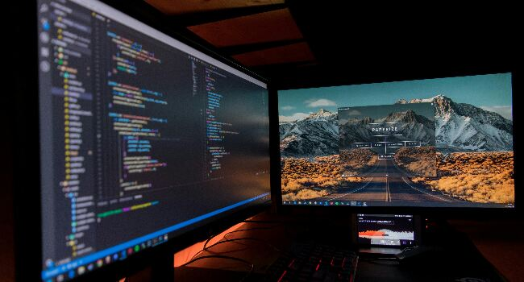

Cinematic Bytes: Tech Tales on the Silver Screen
Tech Tales Unleashed
Top Picks:
- The Matrix - "Where reality is just a line of code."
- The Social Network - "The genesis of a digital era."
- Ex Machina - "When AI meets the human psyche."
Why These Movies?
In these films, technology becomes the protagonist, weaving tales of innovation, ethics, and the limitless possibilities of the digital realm. Join me in this cinematic exploration of the tech landscape!
Go Up!